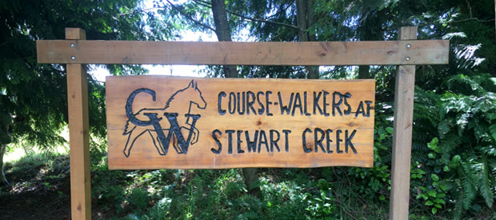

Have a challenging horse? Feel as if your aren’t getting anywhere? Are you new to horses entirely? Course-Walkers Horsemanship lessons are designed to develop in students, a greater understanding of the partnership between horse and rider. We work with both students and horses, with an emphasis on problem-solving in a supportive atmosphere.
Interested? Come and try a free lesson and see if this is for you. Course-Walkers is located just off Stewart Creed Road in Clatskanie, Oregon.
Lesson horses are available and haul-ins are welcome. Ages 8+.
Head west toward Astoria. Pass Rainier and the Longview Bridge, take the Alston-Mayger Road to the right. Stay on Altson-Mayger Road, which passes along the right-hand side of the Alston Corners store. Continue on Alston-Mayger. Alston-Mayger becomes Quincy-Mayger. You will pass Bodine road on your left. The next road is Stewart Creek Road. Turn left. Continue on Stewart Creek Road. Illmari Road intersects with Stewart Creek. Stay on Stewart Creek. We are the fourth mailbox on the left on Stewart Creek Road, past the Illmari intersection.
Course-Walkers, LLP
79884 Stewart Creek Rd
Clatskanie, Oregon 97016
Hope to hear from you soon!